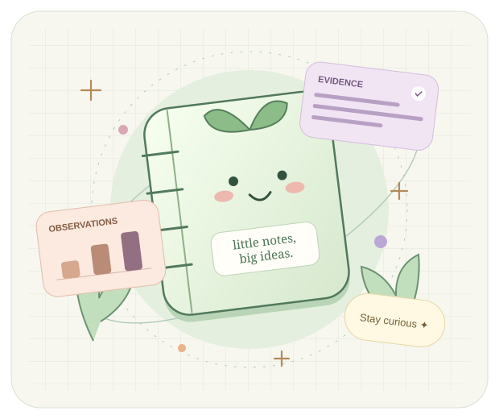

Scientific notebooks
Organise research questions, observations, assumptions and calculation records in project-based notebooks.
A thoughtful little home for big scientific ideas. Bring research notes, evidence, teammates and clear calculations together in one welcoming workspace.

Bring questions, references, analyses and teammates into the same project. Explore an illustrative workspace below — switch between the tools to see the intended experience.
Varma is being built as a coherent research environment, with evidence, numerical tools and collaboration at its core.
Organise research questions, observations, assumptions and calculation records in project-based notebooks.
Work with source references and distinguish cited evidence from interpretation and open questions.
Use bounded mathematical operations with independently checked results and explicit assumptions.
Review molecular structures and documented properties in a dedicated research environment.
Bring team members, shared projects and research records into one coordinated workspace.
Designed for a shared web experience, with desktop and mobile applications on the roadmap.
Try a small, self-contained numerical notebook. Edit the illustrative measurements and see the calculation and visualisation update together. Nothing is uploaded or saved.
Example dataset · Arbitrary units · In-browser computation
Enter a number from 0 to 100 for each example observation.
(24 + 48 + 72) / 3 = 48Arithmetic summary only; no experimental or clinical inference is made.
Curiosity looks good on you. Pip helps you make sense of the three fictional observations in the notebook above.
Small steps. Clear maths. Big curiosity.
Hi, curious human! Pick something to explore.
Calculated from the current notebook values. No network requests, personal data or scientific predictions.
A research programme is more than one experiment. Varma's lifecycle concept connects documentation and human review from initial questions through later-stage research records.
Distinguish verified calculations and cited records from hypotheses, predictions and unknowns.
Support human judgement rather than substitute for experimental validation, clinical review or regulatory decisions.
Make the research record accessible across teams and, as client applications mature, across devices.